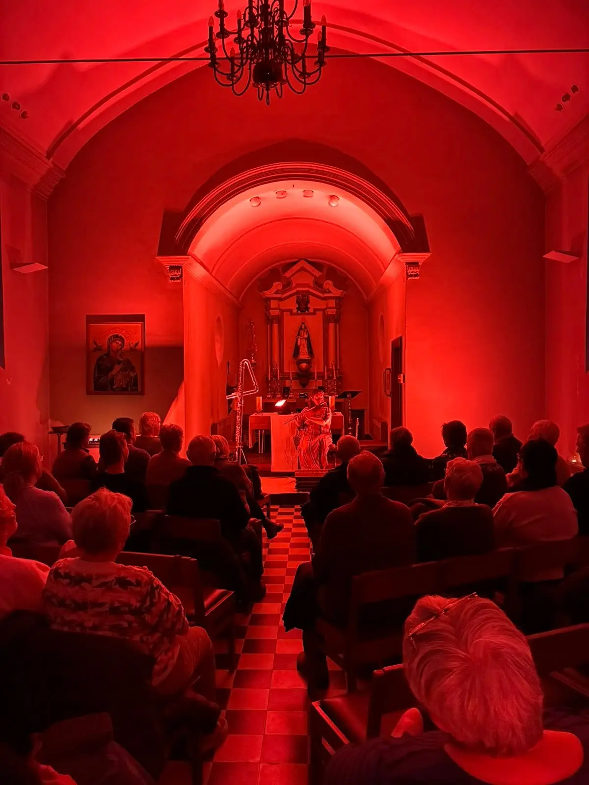
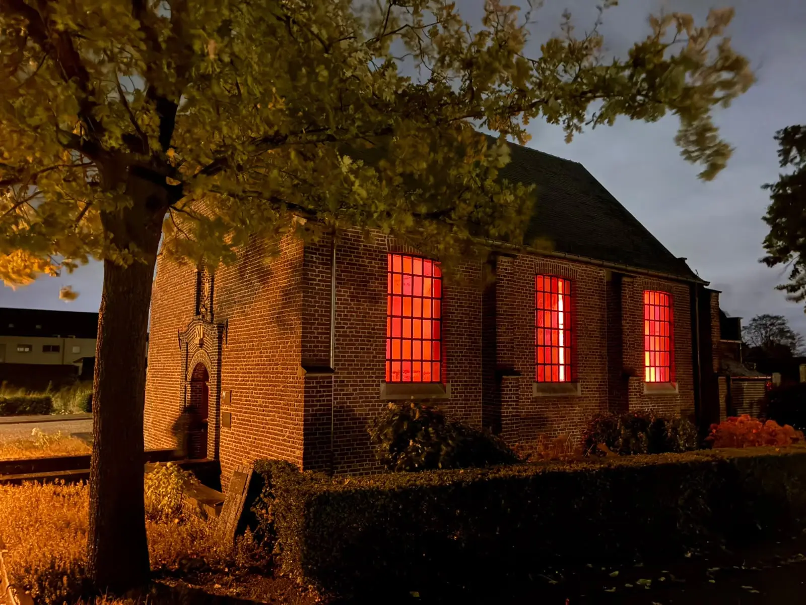

Le concept
Un musicien professionnel joue en acoustique dans une chapelle ou un autre petit lieu particulier, pour un public restreint. Avec un minimum de moyens naît ainsi une expérience d’écoute intense et recueillie : rien que la musique, l’espace et le public.
Le style peut être musiques du monde, folk, jazz, classique ou un mélange. Une formule accessible et abordable, avec une rémunération équitable pour le musicien.
Ce dont nous nous occupons
Nous prenons en charge toute l’organisation :
- la coordination avec la chapelle ou son gestionnaire
- la promotion et la billetterie
- tous les accords avec le musicien
- la coordination le jour même, pour le musicien et le public
À quoi cela ressemblait chez nous
Soirées récentes de notre propre programme :
- Lydie Thonnard, Kapel Onze-Lieve-Vrouw-ten-Eik, Tongerlo (23 octobre 2026)
- Stijn Kuppens, Sint-Bavokapel, Eindhout (24 octobre 2026)
- Stefan Bracaval, Sint-Dimpnakapel, Zammel (17 octobre 2025)
Klanken in de Kapel est une organisation de Merodefestival, en collaboration avec Landschapspark de Merode et vzw Folkmjusic.


Regarder et écouter
Hussein Rassim, Binti Shalabiya